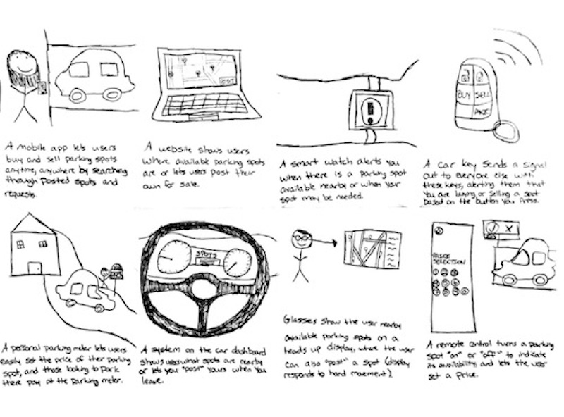

My Role: Interaction Designer
Timeframe: September – December 2018
Project Goal
In my introduction to interaction design course, we were tasked with identifying a problem, and then going through the steps of the interaction design process to solve it over the course of the semester.
Problem Identification
Finding affordable and reliable parking is often difficult for students at the University of Michigan. Especially during colder months, walking long distances can be brutal and many students prefer to drive to save time. Additionally, not all off-campus residences come with parking spots, so some students need to find a place to reliably keep their car for the year. Many students do not have the money to purchase a university parking pass or pay for parking garages and street parking regularly.
I had been seeing lots of posts in various Facebook groups of people trying to buy and sell parking spots at personal residences, yet noticed there was not one easy, accessible place for all of these posts to exist. This could make it difficult to search for a parking spot or ensure that a post is reaching the correct audience. From this observation, I identified the need for one place for students to be able to list their parking spots for sale or search for parking spots.
Competitive Analysis
First, I performed a competitive analysis to familiarize myself with the current market, which allowed me to identify the strengths and what is missing in the current solutions.
Some general strengths that I identified were that all of the current solutions showed the spot on a map, they were searchable either by city or a specific address, and it was easy to adjust the timing of how long you wanted to park in a spot. However, some general weaknesses I noticed were that there was no way to negotiate a price and no alternatives were given if no spots were available (such as nearby bus routes). Additionally, some of the applications only had options for shorter term parking, and no way for somebody to purchase a parking spot for a longer period of time (such as over the course of a whole semester).
I kept these strengths and weaknesses in mind as I continued in the design process. I wanted to be able to build off of what worked well with the current systems and also fill in the gaps of what was missing in them.
Sketching & Brainstorming
Next, after some conversation with classmates, I generated eight different ideas of systems that could be used to help students buy and sell parking. Our instructor made it clear to us that these solutions could be as crazy as we wanted because often times some of the pieces of wild solutions could be used in the final product.
Personas
In order to better understand who my users would be, I created personas. As I designed my product, I kept these personas and their needs in mind. This also included designing one anti-persona, which was somebody who I was definitely not designing my product for.
Storymapping
The next step was to create a story map to represent the steps a user might take to solve the problem of needing to buy or sell a parking spot. This allowed me to critically think about how I might use those steps in the design of my solution.
The green sticky notes represent a general flow, the pink are the steps Kara might take, the orange are John’s, and finally, the purple sticky notes address all the needs that Alexis might have that the previous sticky notes did not. The blue sticky notes are activities.
Prototyping
First, I did a low-fidelity prototype on paper. This made it easy to sketch out my ideas and helped me figure out the best flow of my design.
My digital prototype was created using Sketch and InVision. I picked Sketch because it is easy to have the same basic layout of the screen and change whichever elements necessary to portray an interaction. Sketch is also quite intuitive for a beginner to learn, making it easier for me to figure out how to make my prototype the way I wanted. InVision is very easy to use and works quite well with Sketch since screens are easily imported and can be updated very quickly when a change is made.
My interactive final prototype can be found here: https://projects.invisionapp.com/share/3HPB1QSZAT6.